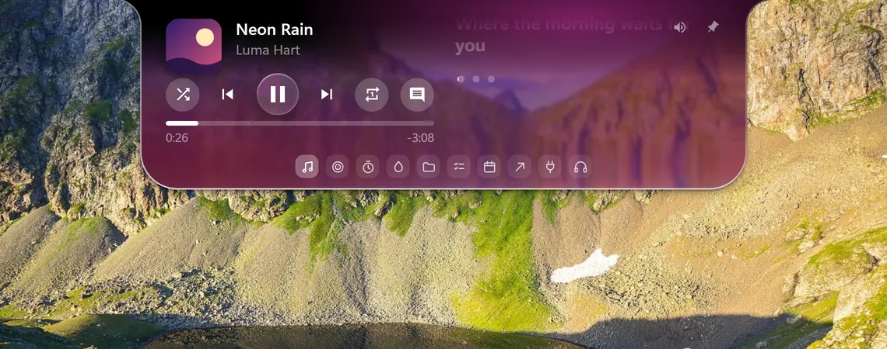

Five pages, one notch.
 Music
MusicLyrics, word by word
When a song has timing data, every word lands on its beat.
 Focus
FocusA pomodoro that stays quiet
Pomodoro, timer, water tracker and to-do, in one place.
 Shelf
ShelfDrop a file, carry it along
Files you drop on the notch can be dragged out into any window.
 Agenda
AgendaYour calendar, by the month
Paste a calendar link (.ics) and read it as a list, a week or a month.
 Earbuds
EarbudsNoise control, one click
Switch Galaxy Buds modes from the notch.
Glass that bends the desktop.
Pick a wallpaper. The notch refracts what is behind it.


Hover the dots, pick a tab.
Point at the small dots and they turn into tab icons.


Nine bands of equalizer.
Equalizer, gaming mode and noise control with one earbud in. Tested on Buds3 Pro only.
Made to be changed.
Over a hundred settings, four languages, plugins in plain JSON.

Free on itch.io.
Windows 10 (2004 or later) or 11. No account, no tracking.
- Install
- No administrator rights needed.
- Verify
- SHA-256 checksums sit on the download page.
- License
- Source-available, noncommercial use (PolyForm Noncommercial 1.0.0).
Not code-signed, so Windows SmartScreen may warn the first time.